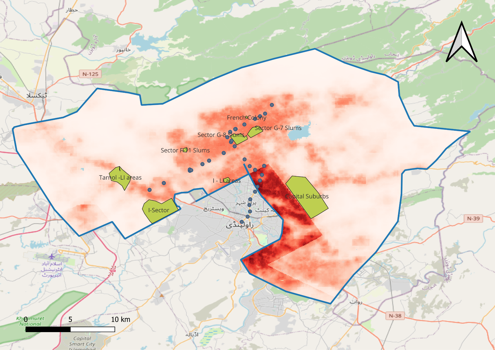
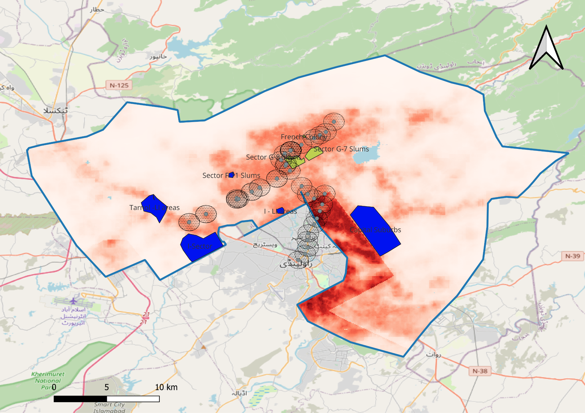
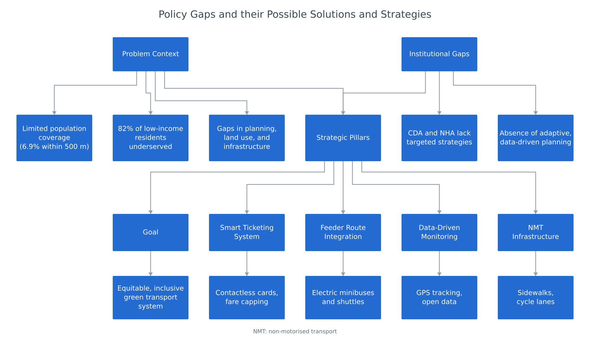

Public transport · Spatial accessibility · Distributional equity
Metrobus Accessibility & Transport Equity in Islamabad
A GIS-based assessment of how Metrobus station coverage aligns with population distribution and low-income settlements in Islamabad.
I integrated station locations, gridded population data, and digitised settlement boundaries to examine the distribution of access to the Metrobus network. The analysis combined population coverage estimates with settlement-level mapping to identify gaps in station proximity and priorities for first- and last-mile connections.

Spatial accessibility
The QGIS workflow combined OpenStreetMap station locations, 100 m WorldPop population data, and low-income settlement polygons digitised using satellite imagery and secondary sources. Station buffers at 500 m and 1 km were overlaid with the population raster, and zonal statistics were used to estimate the population within each threshold. A complementary 15-minute walking-isochrone analysis used OpenRouteService to examine network-based access.
6.9%Population within 500 m station buffers
28.1%Population within 1 km station buffers
Coverage estimates reported for the study area. Buffer distances measure spatial proximity to stations; walking isochrones account for the street network.

Maps from the original project. Population data: WorldPop; station data and basemap: OpenStreetMap contributors. Select a map to inspect it at full size.
Equity implications
The overlays indicate a spatial mismatch between station coverage and several densely populated or low-income areas. Comparing the two distance thresholds shows that wider catchments increase aggregate coverage but leave substantial gaps beyond the corridor.
The study used these patterns to identify priorities for feeder connections, pedestrian access improvements, and equity-sensitive service planning. Its central planning implication is to assess transit investment through the distribution of access across communities, alongside overall network coverage.
From access gaps to planning priorities
The framework connects the study’s accessibility and institutional gaps to four intervention areas: integrated ticketing, feeder services, data-driven monitoring, and pedestrian and cycling infrastructure. These strategies support more equitable access to the existing transit network.
